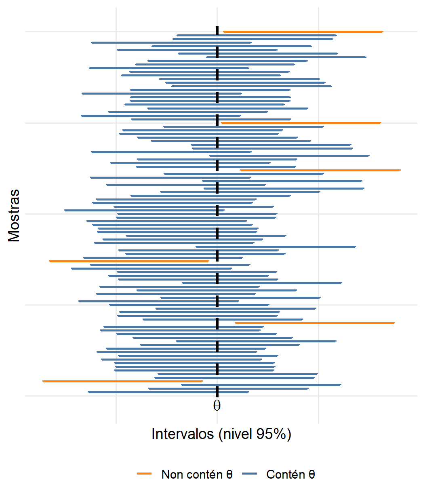
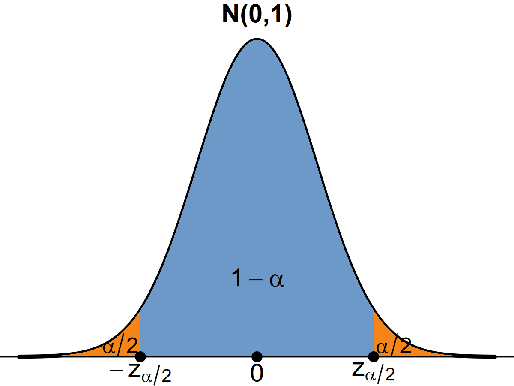
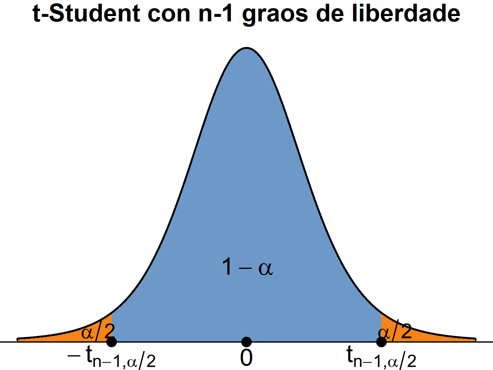
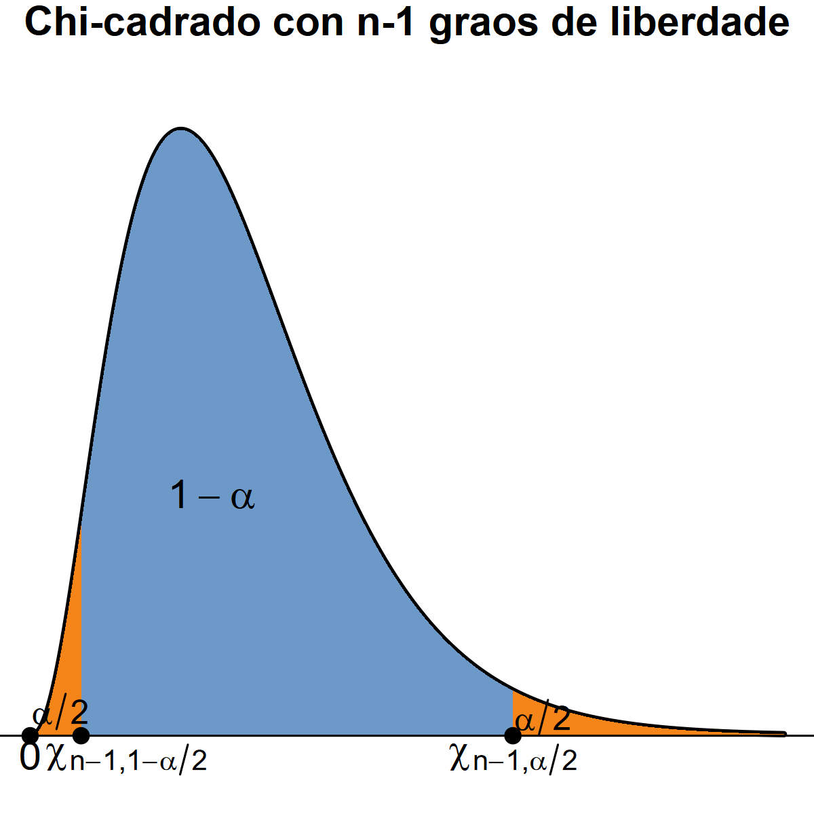

Tema 4. Introdución á inferencia estatística e á estimación de parámetros
Estatística. Grao en Intelixencia Artificial
Tema 4. Introdución á inferencia estatística e á estimación de parámetros
Ao rematar este tema deberías:

Introdución
Tema 1: estudamos conceptos básicos de estatística descritiva, que nos proporcionaban ferramentas para resumir, ordenar e extraer os aspectos máis relevantes da información dunha mostra
Tema 2: establecemos as bases para traballar con incertezas ou probabilidades.
Tema 3: estudamos os principais modelos de variables aleatorias
Tema 4. Introdución á inferencia estatística
Neste tema poderemos comezar a facer inferencia sobre a poboación de interese baseándonos no que observamos nunha mostra. Non nos conformaremos con describir uns datos contidos nunha mostra, senón que pretendemos extraer conclusións para a poboación da que foron extraídos.
Introdución
Segundo os obxectivos, poderemos clasificar as tarefas de inferencia en dúas grandes categorías:
estimar ou aproximar o valor dun parámetro.
contrastar posibles valores dun parámetro.
Parámetro
Característica numérica que nos interese coñecer dunha poboación.
Exemplos
Proporción real de acertos dun modelo de clasificación de imaxes que distingue entre gatos e cans
Tempo medio de resposta dun sistema de recomendación, por exemplo, o número medio de milisegundos que tarda unha plataforma de comercio electrónico en xerar recomendacións personalizadas para un usuario.
Introdución
Inferencia paramétrica
Cando se coñece a forma da distribución de probabilidade e interesa determinar o parámetro ou parámetros dos que depende. Por exemplo, se o tempo de resposta do sistema de recomendación segue unha distribución Normal e interesa coñecer a media \(\mu\) e a desviación típica \(\sigma\).
Inferencia non paramétrica
Cando non se coñece a forma da distribución poboacional. Tamén se poden formular tarefas de estimación, intervalos de confianza e contrastes de hipóteses, aínda que as técnicas estatísticas empregadas son diferentes.
Introdución
Inferencia paramétrica
Cando se coñece a forma da distribución de probabilidade e interesa determinar o parámetro ou parámetros dos que depende. Por exemplo, se o tempo de resposta do sistema de recomendación segue unha distribución Normal e interesa coñecer a media \(\mu\) e a desviación típica \(\sigma\).
Estimación puntual. Consiste en propoñer un valor, calculado a partir da mostra, que estea o máis próximo posible ao verdadeiro parámetro.
Intervalos de confianza. Dado que a estimación puntual leva asociado un certo erro, construímos un intervalo que, con alta probabilidade, conteña o parámetro.
Contrastes de hipóteses. Trátase de responder a preguntas moi concretas sobre a poboación, reducindo o problema a unha decisión sobre a veracidade de determinadas hipóteses.
Plantexamento xeral do problema de inferencia paramétrica
Sexa \(X\) unha variable aleatoria pertence a unha determinada familia de distribucións, como por exemplo a normal ou a binomial. Esta familia depende dun ou varios parámetros, como a media \(\mu\) e a varianza \(\sigma^2\) no caso da normal, e a probabilidade de éxito \(p\) no caso da binomial. En xeral, denotamos \(\theta\) ao parámetro de interese da poboación.
Conceptos relacionados
Mostra aleatoria simple (m.a.s). Unha m.a.s de tamaño \(n\) está formada por \(n\) variables \(X_1, X_2, \ldots, X_n\) independentes e coa mesma distribución que \(X\).
Realización mostral. Son os valores concretos \(x_1, x_2, \ldots,x_n\) que toman as \(n\) variables aleatorias despois de obter a mostra.
Estatístico. Función da mostra aleatoria \(T(X_1, X_2, \ldots, X_n)\). Tamén é unha variable aleatoria e, por iso, terá unha determinada distribución, denominada distribución do estatístico na mostra.
Estimador de \(\theta\). Estatístico \(\hat{\theta}\equiv T(X_1, X_2, \ldots, X_n)\) cuxa función é aproximar o valor de \(\theta\).
Estimación. Valor \(T(x_1, x_2, \ldots, x_n)\) que tomou un estatístico calculado sobre a nosa realización mostral.
Estimación puntual
Sexa \(\theta\) un parámetro de interese da poboación e \(\hat{\theta}\equiv T(X_1, X_2, \ldots, X_n)\) un estimador de \(\theta\).
Propiedades dos estimadores
O nesgo de \(\hat{\theta}\) é a diferencia entre a súa esperanza e o verdadeiro valor \(\theta\), é dicir, \[\textnormal{Nesgo}_{\theta}(\hat{\theta})=\mathbb{E}(\hat{\theta})-\theta.\]
Diremos que \(\hat{\theta}\) non ten nesgo para \(\theta\) se ten nesgo cero ou, equivalemente, se \(\mathbb{E}(\hat{\theta})=\theta.\)
Diremos que \(\hat{\theta}\) é asintóticamente sen nesgo para \(\theta\) se \(\lim_{n\to\infty}\mathbb{E}(\hat{\theta})=\theta.\)
Defínese o Erro Cuadrático Medio (ECM) dun estimador \(\hat{\theta}\) como \(\textnormal{ECM}(\hat{\theta})=\mathbb{E}((\hat{\theta}-\theta)^2).\)
Pódese demostrar que \(\textnormal{ECM}(\hat{\theta})=\mathbb{E}((\hat{\theta}-\theta)^2)=\mathrm{Var}(\hat{\theta})+\textnormal{Nesgo}_{\theta}(\hat{\theta})^2.\)
Diremos que \(\hat{\theta}\) é consistente en media cuadrática se \[\lim_{n \to \infty } \textnormal{ECM}( {\hat {\theta } } ) = 0.\]
Estimación puntual da media
Consideremos unha mostra aleatoria simple \(X_1, \ldots, X_n\) de tamaño \(n\) dunha poboación con media \(\mu\) e desviación típica \(\sigma\).
Estimación puntual da media \(\mu\)
Como estimador natural para a media poboacional, \(\mu\), propoñemos a media da mostra:
\[ \bar{X} = \frac{X_1 + \cdots + X_n}{n} \]
Propiedades:
- \(\mathbb{E}(\bar{X}) = \mu\), polo que é un estimador sen nesgo para \(\mu\).
- \(\mathrm{Var}(\bar{X}) = \dfrac{\sigma^2}{n}\)
- O erro estándar de \(\bar{X}\) é \(\dfrac{\sigma}{\sqrt{n}}\)
Estimación puntual da media
Distribución do estimador \(\bar{X}\)
- Se \(X_1, \dots, X_n\) son variables aleatorias independentes e distribuídas segundo \(N(\mu, \sigma)\), entón a media da mostra é exactamente normal: \[ \bar{X} \sim N\left(\mu, \frac{\sigma}{\sqrt{n}}\right). \]
- Se \(X_1, \dots, X_n\) non son normais, polo TCL, para \(n\) grande, a media da mostra aproxímase a unha normal: \[ \bar{X} \xrightarrow[n \to \infty]{} N\left(\mu, \frac{\sigma}{\sqrt{n}}\right). \]
Estimación puntual da varianza
Consideremos unha m.a.s. \(X_1, \ldots, X_n\) de tamaño \(n\) dunha poboación con media \(\mu\) e desviación típica \(\sigma\).
Estimación puntual da varianza \(\sigma^2\)
Como estimador para a varianza poblacional \(\sigma^2\) empregaremos a cuasivarianza da mostra: \[ S^2 = \frac{1}{n-1} \sum_{i=1}^{n} \left(X_i - \bar{X}\right)^2. \]
Propiedades:
- \(\mathbb{E}(S^2) = \sigma^2\), polo que é un estimador sen nesgo para \(\sigma^2\).
Distribución do estimador \(S^2\)
Se \(X_1, \dots, X_n\) son variables aleatorias independentes e distribuídas segundo \(N(\mu, \sigma)\), entón \((n-1)S^2/\sigma^2\) segue unha distribución chi cadrado con \(n-1\) graos de liberdade.
\[\frac{(n-1)S^2}{\sigma^2}\sim \chi^2_{n-1}.\]
Estimación puntual dunha proporción
Consideremos agora o problema de estimar a proporción de individuos dunha poboación que presentan unha certa característica, a partir dunha mostra aleatoria simple. Sexa
\[ X=\begin{cases} 1, & \text{se o individuo presenta a característica de interese} \\ 0, & \text{se o individuo non presenta a característica de interese.} \end{cases} \]
Así definida, \(X\) ten distribución Bernoulli(\(p\)), onde o parámetro \(p\) é precisamente a proporción (descoñecida) de individuos coa característica na poboación. Sexa \(X_1,\ldots,X_n\) m.a.s coa distribución que \(X\).
Estimación puntual da proporción \(p\)
\[ \hat p = \frac{\text{número de individuos coa característica na mostra}}{n} = \frac{X_1 + \cdots + X_n}{n}. \]
Propiedades:
- \(\mathbb{E}(\hat p) = p\), polo que \(\hat p\) é un estimador sen nesgo para \(p\).
- \(\text{Var}(\hat p) = \frac{p(1-p)}{n}\).
- O erro estándar de \(\hat p\) é \(\sqrt{{p(1-p)}/{n}}\).
Estimación puntual dunha proporción
Distribución do estatístico \(\hat{p}\)
Polo TCL, para \(n\) grande, \(\hat p\) é aproximadamente normal con media \(p\) e varianza \(p(1-p)/n\). É dicir,
\[ \hat p \xrightarrow[n \to \infty]{} N\left(p,\sqrt{\frac{p(1-p)}{n}}\right). \]
Consideremos unha moeda equilibrada coa probabilidade de cara \(p = 0.5\). Se realizamos \(n = 100\) lanzamentos, calcula a probabilidade de que a proporción da mostra \(\hat{p}\) de caras difira da verdadeira proporción \(p\) en menos de 0.1 (10%).
Intervalos de confianza
En moitos casos, unha estimación puntual non é suficiente, xa que non nos proporciona o erro que se comete na estimación. Para obter máis información, veremos a continuación como calcular un intervalo numérico que, cunha certa seguridade, conteña o valor do parámetro na poboación.
Un intervalo de confianza é un intervalo construído a partir da mostra e, por tanto, aleatorio, que contén ao parámetro cunha certa probabilidade, chamada nivel de confianza.
Intervalo de confianza
Un intervalo de confianza para un parámetro descoñecido \(\theta\) con nivel de confianza \(1-\alpha\), \(\alpha \in [0,1]\) é un intervalo de extremos aleatorios \(L_1\equiv L_1(X_1,\ldots,X_n)\) e \(L_2\equiv L_2(X_1,\ldots,X_n)\) que, con probabilidade \(1−\alpha\) conté ao parámetro, é dicir, \[ P(L_1 \leq \theta \leq L_2) = 1-\alpha. \]
Intervalos de confianza
Intervalo de confianza
Un intervalo de confianza para \(\theta\) con nivel de confianza \(1-\alpha\), con \(\alpha \in [0,1]\), é un intervalo con extremos aleatorios \[L_1\equiv L_1(X_1,\ldots,X_n), \ \ L_2\equiv L_2(X_1,\ldots,X_n)\] e que, con probabilidade \(1−\alpha\) conté ao parámetro, é dicir, \[ P(L_1 \leq \theta \leq L_2) = 1-\alpha. \]

Intervalos de confianza
Media dunha poboación normal
- Media con varianza coñecida
- Media con varianza descoñecida
Diferencia de medias de poboacións normais
- Mostras independentes
- Varianzas coñecidas
- Varianzas descoñecidas pero iguais
- Varianzas descoñecidas e diferentes (Welch)
- Mostras emparelladas
Varianza dunha poboación normal
Cociente de varianzas de dúas poboacións normais
Proporción dunha poboación
Diferencia de proporcións
IC para a media dunha poboación normal (\(\sigma^2\) coñecida)
Consideremos unha mostra aleatoria simple \(X_1,\dots,X_n\) de tamaño \(n\) procedente dunha poboación normal \(N(\mu,\sigma)\). Supoñemos que \(\sigma^2\) é coñecida. Sabemos que
\[ \frac{\bar{X}-\mu}{\sigma/\sqrt{n}} \sim N(0,1) \]
Se \(z_{\alpha/2}\) é o número tal que \(P(Z \leq z_{\alpha/2}) = 1-\alpha/2\) con \(Z \sim N(0,1)\), entón:
\[ P\left(-z_{\alpha/2} \le \frac{\bar{X}-\mu}{\sigma/\sqrt{n}} \le z_{\alpha/2}\right) = 1-\alpha. \]
Equivalentemente:
\[ P\left(\bar{X} - z_{\alpha/2}\frac{\sigma}{\sqrt{n}} \le \mu \le \bar{X} + z_{\alpha/2}\frac{\sigma}{\sqrt{n}}\right) = 1-\alpha. \]

IC para a media dunha poboación normal (\(\sigma^2\) coñecida)
Consideremos unha mostra aleatoria simple \(X_1,\dots,X_n\) de tamaño \(n\) procedente dunha poboación normal \(N(\mu,\sigma)\). Supoñemos que \(\sigma^2\) é coñecida.
IC de nivel \(1-\alpha\) para \(\mu\) con \(\sigma^2\) coñecida
\[ \left(\bar{X} - z_{\alpha/2}\frac{\sigma}{\sqrt{n}}, \;\; \bar{X} + z_{\alpha/2}\frac{\sigma}{\sqrt{n}}\right) \]
Unha plataforma de comercio eletrónico quere estimar o tempo medio de resposta (en ms) do seu sistema de recomendación. Para iso mídese o tempo de resposta en 10 usuarios:
\[5.45,\ 4.44,\ 4.95,\ 5.57,\ 4.66,\ 5.58,\ 5.04,\ 4.90,\ 5.45,\ 4.61\]
Suponse que a variable é normal con desviación típica \(\sigma=0.3\). Constrúe un intervalo de confianza do 95% para o tempo medio de resposta.
IC para a media dunha poboación normal (\(\sigma^2\) coñecida)
Consideremos unha mostra aleatoria simple \(X_1,\dots,X_n\) de tamaño \(n\) procedente dunha poboación normal \(N(\mu,\sigma)\). Supoñemos que \(\sigma^2\) é coñecida.
IC de nivel \(1-\alpha\) para \(\mu\) con \(\sigma^2\) coñecida
\[ \left(\bar{X} - z_{\alpha/2}\frac{\sigma}{\sqrt{n}}, \;\; \bar{X} + z_{\alpha/2}\frac{\sigma}{\sqrt{n}}\right) \]
Ao radio do intervalo de confianza anterior chámaselle marxe de erro. Depende de:
- Desviación típica da poboación.
- Tamaño da mostra.
- Nivel de confianza.
IC para a media dunha poboación normal (\(\sigma^2\) coñecida)
Consideremos unha mostra aleatoria simple \(X_1,\dots,X_n\) de tamaño \(n\) procedente dunha poboación normal \(N(\mu,\sigma)\). Supoñemos que \(\sigma^2\) é coñecida.
IC de nivel \(1-\alpha\) para \(\mu\) con \(\sigma^2\) coñecida
\[ \left(\bar{X} - z_{\alpha/2}\frac{\sigma}{\sqrt{n}}, \;\; \bar{X} + z_{\alpha/2}\frac{\sigma}{\sqrt{n}}\right) \]
En ocasións é interesante determinar o tamaño da mostra necesario para obter un intervalo de confianza cunha lonxitude determinada. A lonxitude do intervalo é:
\[ L = 2 \, z_{\alpha/2} \, \frac{\sigma}{\sqrt{n}} \]
Despexando \(n\) da fórmula anterior, obtemos o tamaño da mostra necesario para unha lonxitude \(L\):
\[ n = \left(\frac{2 \, z_{\alpha/2} \, \sigma}{L}\right)^2 \]
IC para a media dunha poboación normal (\(\sigma^2\) descoñecida)
Consideremos unha mostra aleatoria simple \(X_1,\dots,X_n\) de tamaño \(n\) procedente dunha poboación normal \(N(\mu,\sigma)\). Supoñemos que \(\sigma^2\) é descoñecida. Neste caso, usamos como pivote:
\[ \frac{\bar{X}-\mu}{S/\sqrt{n}} \sim t_{n-1} \]
Se \(t_{n-1,\alpha/2}\) é tal que \(P(T \leq t_{n-1,\alpha/2}) = 1-\alpha/2\) con \(T \sim t_{n-1}\) ( distribución \(t\) de Student con \(n-1\) graos de liberdade), entón:
\[ P\left(-t_{n-1,\alpha/2} \le \frac{\bar{X}-\mu}{S/\sqrt{n}} \le t_{n-1,\alpha/2}\right) = 1-\alpha. \]
Equivalentemente:
\[ P\left(\bar{X} - t_{n-1,\alpha/2}\frac{S}{\sqrt{n}} \le \mu \le \bar{X} + t_{n-1,\alpha/2}\frac{S}{\sqrt{n}}\right) = 1-\alpha. \]

IC para a media dunha poboación normal (\(\sigma^2\) descoñecida)
Consideremos unha mostra aleatoria simple \(X_1,\dots,X_n\) de tamaño \(n\) procedente dunha poboación normal \(N(\mu,\sigma)\). Supoñemos que \(\sigma^2\) é descoñecida.
IC de nivel \(1-\alpha\) para \(\mu\) con \(\sigma^2\) descoñecida
\[ \left(\bar{X} - t_{n-1,\alpha/2}\frac{S}{\sqrt{n}}, \;\; \bar{X} + t_{n-1\alpha/2}\frac{S}{\sqrt{n}}\right) \]
Unha plataforma de comercio eletrónico quere estimar o tempo medio de resposta (en ms) do seu sistema de recomendación. Para iso mídese o tempo de resposta en 10 usuarios:
\[5.45,\ 4.44,\ 4.95,\ 5.57,\ 4.66,\ 5.58,\ 5.04,\ 4.90,\ 5.45,\ 4.61\]
Suponse que a variable é normal (non se coñece \(\sigma\)). Constrúe un intervalo de confianza do 95% para o tempo medio de resposta.
x <- c(5.45, 4.44, 4.95, 5.57, 4.66, 5.58, 5.04, 4.9, 5.45, 4.61)
n <- length(x)
alpha <- 0.05
xbar <- mean(x)
s <- sd(x)
t_alpha2 <- qt(1 - alpha/2, df = n - 1)
LI <- xbar - t_alpha2 * s/sqrt(n)
LI
## [1] 4.761551
LS <- xbar + t_alpha2 * s/sqrt(n)
LS
## [1] 5.368449
t.test(x, conf.level = 0.95)$conf.int
## [1] 4.761551 5.368449
## attr(,"conf.level")
## [1] 0.95IC para a a diferenza de medias de poboacións normais
Ata agora vimos intervalos de confianza para a media dunha característica dunha poboación. Agora ampliamos o concepto para comparar dúas medias, que poden corresponder a dúas poboacións distintas ou a dúas medicións sobre os mesmos individuos.
Segundo o tipo de datos, distinguimos:
- Mostras independentes: as observacións das dúas poboacións non teñen relación directa entre si. Dentro deste caso, podemos diferenciar varias situacións segundo a información sobre as varianzas:
- Varianzas coñecidas: cando se coñecen as varianzas das dúas poboacións.
- Varianzas descoñecidas pero iguais: cando se ignoran as varianzas pero supoñemos que son iguais.
- Varianzas descoñecidas e diferentes: cando non se coñecen e non se supón igualdade.
- Mostras emparelladas: cada individuo proporciona dúas medicións relacionadas, como nun estudo pre-post ou repeticións sobre o mesmo suxeito.
En cada caso, construiremos o intervalo de confianza adecuado para estimar a diferenza de medias con nivel de confianza \(1-\alpha\).
IC para a a diferenza de medias de poboacións normais. Mostras independentes, varianzas coñecidas
Supoñamos dúas poboacións nas que se estudan dúas características distribuídas normalmente con medias descoñecidas \(\mu_1\) e \(\mu_2\), respectivamente. Estamos interesados en construír un intervalo de confianza para a diferenza de medias \(\mu_1-\mu_2\) a partir de dúas mostras:
- Unha mostra formada por \(n_1\) variables independentes e coa mesma distribución \(N(\mu_1, \sigma_1)\).
- Unha mostra formada por \(n_2\) variables independentes e coa mesma distribución \(N(\mu_2, \sigma_2)\).
As mostras son independentes, é dicir, os individuos da poboación 1 son distintos dos individuos da poboación 2. Supoñemos ademais que as varianzas \(\sigma_1^2\) e \(\sigma_2^2\) son coñecidas.
O estatístico a utilizar é:
\[ \frac{(\bar X_1 - \bar X_2) - (\mu_1 - \mu_2)}{\sqrt{\frac{\sigma_1^2}{n_1} + \frac{\sigma_2^2}{n_2}}} \sim N(0,1) \]
IC para a a diferenza de medias de poboacións normais. Mostras independentes, varianzas coñecidas
IC de nivel \(1-\alpha\) para \(\mu_1-\mu_2\) con \(\sigma_1^2\) e \(\sigma_2^2\) coñecidas
\[ \left( (\bar X_1 - \bar X_2) - z_{\alpha/2} \sqrt{\frac{\sigma_1^2}{n_1} + \frac{\sigma_2^2}{n_2}},\;\; (\bar X_1 - \bar X_2) + z_{\alpha/2} \sqrt{\frac{\sigma_1^2}{n_1} + \frac{\sigma_2^2}{n_2}} \right) \]
Unha plataforma de comercio electrónico compara o tempo medio de resposta do seu sistema en dous servidores distintos. Obsérvanse os tempos de 10 usuarios distintos en cada servidor:
- Servidor 1: \(5.45, 4.44, 4.95, 5.57, 4.66, 5.58, 5.04, 4.90, 5.45, 4.61\)
- Servidor 2: \(5.10, 4.80, 4.85, 5.20, 4.90, 5.00, 4.95, 4.88, 5.05, 4.92\)
Supoñendo que os tempos en cada servidos son normais con \(\sigma_1 = 0.3\) e \(\sigma_2 = 0.25\), constrúe un intervalo de confianza do 95% para a diferenza de tempos medios entre servidores.
x1 <- c(5.45, 4.44, 4.95, 5.57, 4.66, 5.58, 5.04, 4.9, 5.45, 4.61)
x2 <- c(5.1, 4.8, 4.85, 5.2, 4.9, 5, 4.95, 4.88, 5.05, 4.92)
n1 <- length(x1)
n2 <- length(x2)
sigma1 <- 0.3
sigma2 <- 0.25
xbar1 <- mean(x1)
xbar2 <- mean(x2)
alpha <- 0.05
z_alpha2 <- qnorm(1 - alpha/2)
se_diff <- sqrt(sigma1^2/n1 + sigma2^2/n2)
LI <- (xbar1 - xbar2) - z_alpha2 * se_diff
LI
## [1] -0.1420377
LS <- (xbar1 - xbar2) + z_alpha2 * se_diff
LS
## [1] 0.3420377IC para a a diferenza de medias de poboacións normais. Mostras independentes, varianzas descoñecidas pero iguais
En moitas aplicacións, os valores de \(\sigma_1^2\) e \(\sigma_2^2\) son descoñecidos, pero podemos supoñer que son iguais. Consideremos dúas poboacións con características distribuídas normalmente con medias descoñecidas \(\mu_1\) e \(\mu_2\). Queremos construír un intervalo de confianza para \(\mu_1-\mu_2\) a partir de dúas mostras:
- Unha mostra formada por \(n_1\) variables independentes e coa mesma distribución \(N(\mu_1, \sigma_1)\).
- Unha mostra formada por \(n_2\) variables independentes e coa mesma distribución \(N(\mu_2, \sigma_2)\).
As mostras son independentes e as varianzas son descoñecidas pero iguais. O estatístico é:
\[ \frac{(\bar X_1 - \bar X_2) - (\mu_1 - \mu_2)}{\sqrt{\frac{S_p^2}{n_1} + \frac{S_p^2}{n_2}}} \sim t_{n_1+n_2-2} \]
onde \(S_p^2\) é o estimador combinado de varianza das dúas poboacións
\[ S_p^2 = \frac{(n_1-1)S_1^2 + (n_2-1)S_2^2}{n_1+n_2-2}. \]
IC para a a diferenza de medias de poboacións normais. Mostras independentes, varianzas descoñecidas pero iguais
IC de nivel \(1-\alpha\) para \(\mu_1-\mu_2\) con \(\sigma_1^2\) e \(\sigma_2^2\) descoñecidas (\(\sigma_1^2=\sigma_2^2\))
\[ \left( (\bar X_1 - \bar X_2) - t_{n_1+n_2-2,\alpha/2} \sqrt{\frac{S_p^2}{n_1} + \frac{S_p^2}{n_2}},\;\; (\bar X_1 - \bar X_2) + t_{n_1+n_2-2,\alpha/2} \sqrt{\frac{S_p^2}{n_1} + \frac{S_p^2}{n_2}} \right) \]
Unha plataforma de comercio electrónico compara o tempo medio de resposta do seu sistema en dous servidores distintos. Obsérvanse os tempos de 10 usuarios distintos en cada servidor:
- Servidor 1: \(5.45, 4.44, 4.95, 5.57, 4.66, 5.58, 5.04, 4.90, 5.45, 4.61\)
- Servidor 2: \(5.10, 4.80, 4.85, 5.20, 4.90, 5.00, 4.95, 4.88, 5.05, 4.92\)
Supoñendo que os tempos son normais e as varianzas descoñecidas pero iguais, constrúe un intervalo de confianza do 95% para a diferenza de tempos medios entre servidores.
x1 <- c(5.45, 4.44, 4.95, 5.57, 4.66, 5.58, 5.04, 4.9, 5.45, 4.61)
x2 <- c(5.1, 4.8, 4.85, 5.2, 4.9, 5, 4.95, 4.88, 5.05, 4.92)
n1 <- length(x1)
n2 <- length(x2)
xbar1 <- mean(x1)
xbar2 <- mean(x2)
s1 <- sd(x1)
s2 <- sd(x2)
sp2 <- ((n1 - 1) * s1^2 + (n2 - 1) * s2^2)/(n1 + n2 - 2)
alpha <- 0.05
t_alpha2 <- qt(1 - alpha/2, df = n1 + n2 - 2)
se_diff <- sqrt(sp2/n1 + sp2/n2)
LI <- (xbar1 - xbar2) - t_alpha2 * se_diff
LI
## [1] -0.1934196
LS <- (xbar1 - xbar2) + t_alpha2 * se_diff
LS
## [1] 0.3934196
t.test(x1, x2, var.equal = TRUE, conf.level = 0.95)$conf.int
## [1] -0.1934196 0.3934196
## attr(,"conf.level")
## [1] 0.95IC para a a diferenza de medias de poboacións normais. Mostras independentes, varianzas descoñecidas e distintas
Consideremos agora dúas poboacións con características distribuídas normalmente con medias descoñecidas \(\mu_1\) e \(\mu_2\). Queremos construír un intervalo de confianza para \(\mu_1-\mu_2\) a partir de dúas mostras:
- Unha mostra formada por \(n_1\) variables independentes e coa mesma distribución \(N(\mu_1, \sigma_1)\).
- Unha mostra formada por \(n_2\) variables independentes e coa mesma distribución \(N(\mu_2, \sigma_2)\).
As mostras so independentes e supoñemos que as varianzas son descoñecidas e diferentes. Agora non podemos ter unha estimación global da varianza como no caso anterior, polo que o estatístico pivote que debemos utilizar é:
\[ W = \frac{(\bar X_1 - \bar X_2) - (\mu_1 - \mu_2)}{\sqrt{\frac{S_1^2}{n_1} + \frac{S_2^2}{n_2}}}\xrightarrow[n \to \infty]{} N(0,1) \]
que asintoticamente segue unha distribución \(N(0,1)\).
IC para a a diferenza de medias de poboacións normais. Mostras independentes, varianzas descoñecidas e distintas
IC de nivel \(1-\alpha\) para \(\mu_1-\mu_2\) con \(\sigma_1^2\) e \(\sigma_2^2\) descoñecidas
O intervalo de confianza aproximado de nivel \(1-\alpha\) para a diferenza de medias \(\mu_1-\mu_2\) para \(n\) grande será: \[ \left( (\bar X_1 - \bar X_2) - z_{\alpha/2} \sqrt{\frac{S_1^2}{n_1} + \frac{S_2^2}{n_2}}, \;\; (\bar X_1 - \bar X_2) + z_{\alpha/2} \sqrt{\frac{S_1^2}{n_1} + \frac{S_2^2}{n_2}} \right) \] O IC pode ser pouco preciso para tamaños de mostra pequenos. Cando \(n_1\) ou \(n_2 < 30\), empréganse aproximacións (aproximación de Welch, que substitúe \(z_{\alpha/2}\) polo valor \(t_{\alpha/2}\) dunha distribución \(t\) de Student adecuada).
Unha plataforma de comercio electrónico compara o tempo medio de resposta do seu sistema en dous servidores distintos. Obsérvanse os tempos de 10 usuarios distintos en cada servidor:
- Servidor 1: \(5.45, 4.44, 4.95, 5.57, 4.66, 5.58, 5.04, 4.90, 5.45, 4.61\)
- Servidor 2: \(5.10, 4.80, 4.85, 5.20, 4.90, 5.00, 4.95, 4.88, 5.05, 4.92\)
Supoñendo que os tempos son normais e as varianzas descoñecidas, constrúe un intervalo de confianza do 95% para a diferenza de tempos medios entre servidores.
x1 <- c(5.45, 4.44, 4.95, 5.57, 4.66, 5.58, 5.04, 4.9, 5.45, 4.61)
x2 <- c(5.1, 4.8, 4.85, 5.2, 4.9, 5, 4.95, 4.88, 5.05, 4.92)
n1 <- length(x1)
n2 <- length(x2)
xbar1 <- mean(x1)
xbar2 <- mean(x2)
s1 <- sd(x1)
s2 <- sd(x2)
alpha <- 0.05
z_alpha2 <- qnorm(1 - alpha/2)
se_diff <- sqrt(s1^2/n1 + s2^2/n2)
LI <- (xbar1 - xbar2) - z_alpha2 * se_diff
LI
## [1] -0.1737331
LS <- (xbar1 - xbar2) + z_alpha2 * se_diff
LS
## [1] 0.3737331
t.test(x1, x2, var.equal = FALSE, conf.level = 0.95)$conf.int # Aproximación de Welch
## [1] -0.209184 0.409184
## attr(,"conf.level")
## [1] 0.95IC para a a diferenza de medias de poboacións normais. Mostras emparelladas
Supoñemos que \(X_1 \sim N(\mu_1, \sigma_1)\) e \(X_2 \sim N(\mu_2, \sigma_2)\), pero tendo en conta que agora \(X_1\) e \(X_2\) non son independentes. Queremos construír un intervalo de confianza para a diferenza de medias \(\mu_1-\mu_2\). Sexa \(D = X_1 - X_2\). Así definida \[D\sim N(\mu_D, \sigma_D).\] con \(\mu_D=\mu_1-\mu_2\). Na práctica, dispoñemos de dúas mostras emparelladas de tamaño \(n\) observadas nos mesmos individuos:
- \(X_{11}, \dots, X_{1n}\) coa mesma distribución \(N(\mu_1, \sigma_1)\).
- \(X_{21}, \dots, X_{2n}\) coa mesma distribución \(N(\mu_2, \sigma_2)\).
Tendo en conta que os valores están emparellados, construímos a mostra das diferenzas:
\[ D_i = X_{1i} - X_{2i}, \quad i=1,\dots,n \]
Como estatístico pivote utilizamos:
\[ \frac{\bar D - (\mu_1 - \mu_2)}{S_D / \sqrt{n}} \sim t_{n-1} \]
IC para a a diferenza de medias de poboacións normais. Mostras emparelladas
IC de nivel \(1-\alpha\) para \(\mu_1-\mu_2\). Mostras emparelladas
\[ \left( \bar D - t_{n-1,\alpha/2} \frac{S_D}{\sqrt{n}}, \;\; \bar D + t_{n-1\alpha/2} \frac{S_D}{\sqrt{n}} \right)\]
Un equipo de IA quere avaliar o impacto dunha nova técnica de preprocesamento sobre o tempo de adestramento dun modelo de clasificación de imaxes. Para iso, obtéñense os tempos de adestramento do modelo (en segundos) para 10 imaxes antes e despois de aplicar a técnica.
- Antes do preprocesamento: \(82, 85, 78, 90, 88, 84, 87, 80, 86, 83\)
- Despois do preprocesamento: \(85, 88, 80, 92, 90, 86, 89, 82, 88, 85\)
Constrúe un intervalo de confianza do 95% para a diferenza dos tempos medios de adestramento.
antes <- c(82, 85, 78, 90, 88, 84, 87, 80, 86, 83)
despois <- c(85, 88, 80, 92, 90, 86, 89, 82, 88, 85)
d <- antes - despois
n <- length(d)
dbar <- mean(d)
sD <- sd(d)
alpha <- 0.05
t_alpha2 <- qt(1 - alpha/2, df = n - 1)
LI <- dbar - t_alpha2 * sD/sqrt(n)
LI
## [1] -2.501621
LS <- dbar + t_alpha2 * sD/sqrt(n)
LS
## [1] -1.898379
t.test(antes, despois, paired = TRUE, conf.level = 0.95)$conf.int
## [1] -2.501621 -1.898379
## attr(,"conf.level")
## [1] 0.95IC para a varianza dunha poboación normal
Consideremos de novo unha mostra aleatoria simple \(X_1,\dots,X_n\) de tamaño \(n\) procedente dunha poboación normal \(N(\mu,\sigma)\). Agora o obxectivo é construír un intervalo de confianza para o parámetro \(\sigma^2\). Nese caso, podemos considerar como estatístico pivote:
\[ \frac{(n-1) S^2}{\sigma^2} \sim \chi^2_{n-1} \]
Procedendo de forma análoga ao caso da media, temos:
\[ P\Big(\chi^2_{n-1,1-\alpha/2} \le \frac{(n-1) S^2}{\sigma^2} \le \chi^2_{n-1,\alpha/2}\Big) = 1-\alpha \]
onde \(\chi^2_{n-1,1-\alpha/2}\) e \(\chi^2_{n-1,\alpha/2}\) denotan, respectivamente, os cuantís \(\alpha/2\) e \(1-\alpha/2\) da distribución \(\chi^2\) con \(n-1\) graos de liberdade.

IC para a varianza dunha poboación normal
IC de nivel \(1-\alpha\) para \(\sigma^2\)
\[ \left( \frac{(n-1)S^2}{\chi^2_{n-1,\,\alpha/2}}, \; \frac{(n-1)S^2}{\chi^2_{n-1,\,1-\alpha/2}} \right) \]
Unha plataforma de comercio eletrónico mide o tempo de resposta (en ms) do seu sistema de recomendación en 10 usuarios:
\[5.45,\ 4.44,\ 4.95,\ 5.57,\ 4.66,\ 5.58,\ 5.04,\ 4.90,\ 5.45,\ 4.61\]
Suponse que a variable é normal. Constrúe un intervalo de confianza do 95% para a varianza do tempo de resposta.
x <- c(5.45, 4.44, 4.95, 5.57, 4.66, 5.58, 5.04, 4.9, 5.45, 4.61)
n <- length(x)
alpha <- 0.05
xbar <- mean(x)
s2 <- var(x)
chi_lower <- qchisq(alpha/2, df = n - 1)
chi_upper <- qchisq(1 - alpha/2, df = n - 1)
LI <- (n - 1) * s2/chi_upper
LI
## [1] 0.0851322
LS <- (n - 1) * s2/chi_lower
LS
## [1] 0.5997098Intervalo de confianza para o cociente de varianzas de poboacións normais
Supoñamos dúas poboacións nas que se estudan dúas características distribuídas normalmente con varianzas descoñecidas \(\sigma_1^2\) e \(\sigma_2^2\), respectivamente. Estamos interesados en construír un intervalo de confianza para \(\sigma_1^2/\sigma_2^2\) a partir de dúas mostras:
- Unha mostra formada por \(n_1\) variables independentes e coa mesma distribución \(N(\mu_1, \sigma_1)\).
- Unha mostra formada por \(n_2\) variables independentes e coa mesma distribución \(N(\mu_2, \sigma_2)\).
Nese caso, podemos considerar como estatístico pivote:
\[ \frac{S_1^2/\sigma_1^2}{S_2^2/\sigma_2^2} \sim F_{n_1-1,n_2-1} \]
onde \(F_{n_1-1,n_2-1}\) é unha distribución F de Snedecor. Procedendo como nos casos anteriores, obtense
\[ P\!\left( F_{n_1-1,n_2-1,\,1-\alpha/2} \le \frac{S_1^2/\sigma_1^2}{S_2^2/\sigma_2^2} \le F_{n_1-1,n_2-1,\,\alpha/2} \right)=1-\alpha \]
onde \(F_{n_1-1,n_2-1,\,1-\alpha/2}\) e \(F_{n_1-1,n_2-1,\,\alpha/2}\) denotan, respectivamente, os cuantís \(\alpha/2\) e \(1-\alpha/2\) da distribución \(F\) de Snedecor con \(n_1-1\) e \(n_2-1\) graos de liberdade.
Intervalo de confianza para o cociente de varianzas de poboacións normais
IC de nivel \(1-\alpha\) para \(\sigma_1^2/\sigma_2^2\)
\[ \left( \frac{{S_1^2}/{S_2^2}}{F_{n_1-1,n_2-1,\,\alpha/2}}, \; \frac{{S_1^2}/{S_2^2}}{F_{n_1-1,n_2-1,\,1-\alpha/2}} \right)=\left( \frac{{S_1^2}}{{S_2^2}}{F_{n_2-1,n_1-1,\,1-\alpha/2}}, \; \frac{{S_1^2}}{{S_2^2}}{F_{n_2-1,n_1-1,\,\alpha/2}} \right) \]
Unha plataforma de comercio electrónico quere analizar a variabilidade do tempo de resposta do seu sistema de recomendación en dous servidores distintos. Obsérvanse os tempos de 10 usuarios distintos en cada servidor:
- Servidor 1: \(5.45, 4.44, 4.95, 5.57, 4.66, 5.58, 5.04, 4.90, 5.45, 4.61\)
- Servidor 2: \(5.10, 4.80, 4.85, 5.20, 4.90, 5.00, 4.95, 4.88, 5.05, 4.92\)
Supoñendo que os tempos son normais, constrúe un intervalo de confianza do 95% para a o cociente das varianzas dos tempos nos dous servidores.
x1 <- c(5.45, 4.44, 4.95, 5.57, 4.66, 5.58, 5.04, 4.9, 5.45, 4.61)
x2 <- c(5.1, 4.8, 4.85, 5.2, 4.9, 5, 4.95, 4.88, 5.05, 4.92)
n1 <- length(x1)
n2 <- length(x2)
s12 <- var(x1)
s22 <- var(x2)
alpha <- 0.05
F_lower <- qf(alpha/2, df1 = n1 - 1, df2 = n2 - 1)
F_upper <- qf(1 - alpha/2, df1 = n1 - 1, df2 = n2 - 1)
LI <- (s12/s22)/F_upper
LI
## [1] 2.956622
LS <- (s12/s22)/F_lower
LS
## [1] 47.92279
var_test <- var.test(x1, x2, conf.level = 0.95)
var_test$conf.int
## [1] 2.956622 47.922795
## attr(,"conf.level")
## [1] 0.95IC para a unha proporción
Consideremos unha mostra aleatoria simple de tamaño \(n\) dunha poboación na que queremos estimar a proporción \(p\) dunha característica de interese. A proporción da mostra é:
\[ \hat p = \frac{X_1 + \dots + X_n}{n}, \]
onde \(X_i = 1\) se o individuo presenta a característica e \(X_i = 0\) en caso contrario. Para \(n\) grande, polo Teorema Central do Límite, podemos aproximar a distribución da proporción da mostra por unha normal:
\[ \frac{\hat p - p}{\sqrt{\frac{p(1-p)}{n}}} \xrightarrow[n \to \infty]{d} N(0,1) \]
Entón:
\[ P\left(\hat p - z_{\alpha/2} \sqrt{\frac{p(1-p)}{n}} \le p \le \hat p + z_{\alpha/2} \sqrt{\frac{p(1-p)}{n}}\right) = 1-\alpha. \]
IC para unha proporción
IC aproximado de nivel \(1-\alpha\) para \(p\)
\[ \left(\hat p - z_{\alpha/2} \sqrt{\frac{\hat p (1-\hat p)}{n}}, \;\; \hat p + z_{\alpha/2} \sqrt{\frac{\hat p (1-\hat p)}{n}}\right) \]
Un modelo de clasificación de imaxes distingue entre gatos e cans. Avaliáronse 50 imaxes, das cales 42 foron clasificadas correctamente polo modelo.
Constrúe un intervalo de confianza do 95% para a proporción de clasificación correcta do modelo.
IC para a para a diferenza de proporcións
Nalgúns casos estamos interesados en estimar a diferenza de proporcións \(p_1-p_2\) de dúas poboacións. Para iso dispoñemos de dúas mostras:
- Unha mostra formada por \(n_1\) variables independentes procedentes da poboación 1.
- Unha mostra formada por \(n_2\) variables independentes procedentes da poboación 2.
Supoñemos que as mostras son independentes, é dicir, os individuos nos que se realizan as medicións da poboación 1 son distintos dos individuos da poboación 2.
Para tamaños mostrais grandes, empregamos o estatístico
\[ \frac{(\hat p_1-\hat p_2)-(p_1-p_2)} {\sqrt{\frac{\hat p_1(1-\hat p_1)}{n_1}+\frac{\hat p_2(1-\hat p_2)}{n_2}}} \xrightarrow[n \to \infty]{d} N(0,1) \]
IC para a diferenza de proporcións
IC aproximado de nivel \(1-\alpha\) para \(p_1-p_2\)
\[ \left( (\hat p_1-\hat p_2)-z_{\alpha/2} \sqrt{\frac{\hat p_1(1-\hat p_1)}{n_1}+\frac{\hat p_2(1-\hat p_2)}{n_2}}, \; (\hat p_1-\hat p_2)+z_{\alpha/2} \sqrt{\frac{\hat p_1(1-\hat p_1)}{n_1}+\frac{\hat p_2(1-\hat p_2)}{n_2}} \right) \]
Un equipo compara dous modelos de clasificación de imaxes: Modelo A e Modelo B. Avaliáronse 50 imaxes con cada modelo:
Modelo A: 42 clasificacións correctas
Modelo B: 45 clasificacións correctas
Constrúe un intervalo de confianza do 95% para a diferenza de proporcións de clasificación correcta.
n1 <- 50
x1 <- 42 # Modelo A
n2 <- 50
x2 <- 45 # Modelo B
p1_hat <- x1/n1
p2_hat <- x2/n2
alpha <- 0.05
z_alpha2 <- qnorm(1 - alpha/2)
se_diff <- sqrt(p1_hat * (1 - p1_hat)/n1 + p2_hat * (1 - p2_hat)/n2)
LI <- (p1_hat - p2_hat) - z_alpha2 * se_diff
LI
## [1] -0.191303
LS <- (p1_hat - p2_hat) + z_alpha2 * se_diff
LS
## [1] 0.07130296Tema 4. Introdución á inferencia estatística e á estimación de parámetros
Ao rematar este tema deberías:

Beatriz Pateiro López